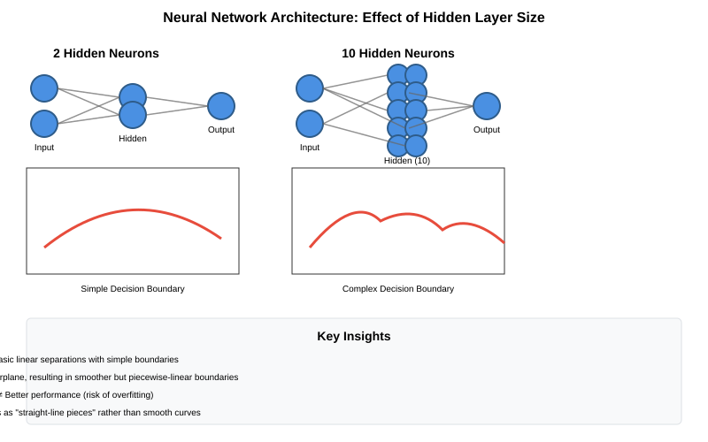
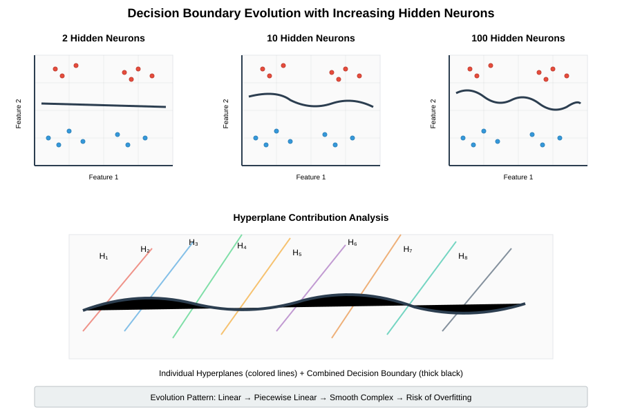
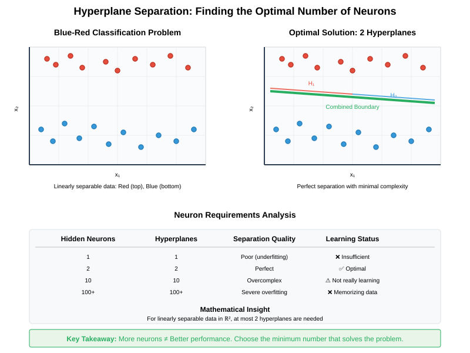
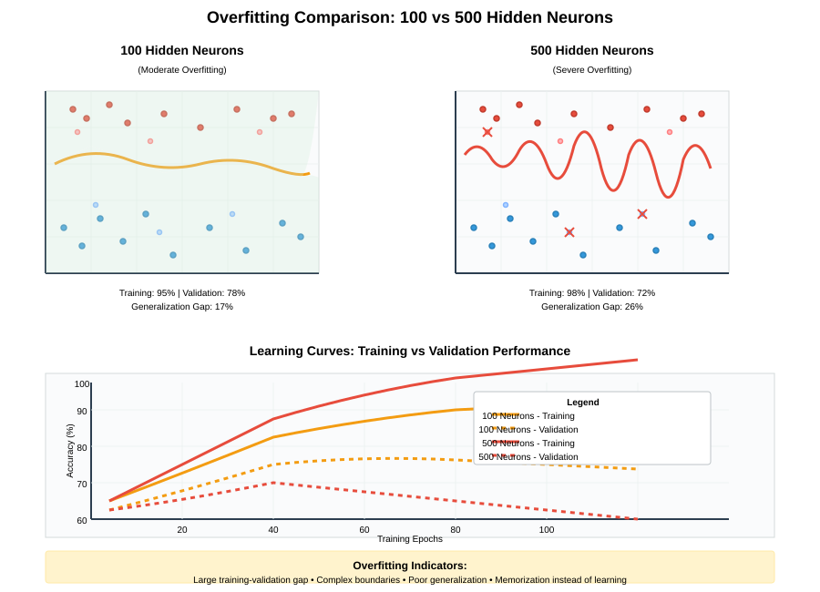

Hidden Neurons and Decision Boundaries in Neural Networks
📋 Quick Navigation
- Overview
- Impact of Hidden Neurons on Decision Boundaries
- Mathematical Foundation
- Optimal Number of Hidden Neurons
- Overfitting and Network Complexity
- Practical Implementation
- Performance Comparisons
- References & Further Reading
🧠 Overview
Understanding how the number of hidden neurons affects decision boundaries is crucial for designing effective neural networks. This documentation explores the relationship between network architecture and classification performance, providing insights into optimal neuron selection and overfitting prevention.

Key Concepts
- Decision Boundary: The surface that separates different classes in the feature space
- Hidden Neurons: Processing units in intermediate layers that learn feature representations
- Hyperplanes: Linear decision surfaces created by individual neurons
- Overfitting: When a model learns training data too specifically, reducing generalization
🎯 Impact of Hidden Neurons on Decision Boundaries
Decision Boundary Smoothness
When we increase the number of neurons in the hidden layer, the decision boundary becomes more smooth. This relationship follows a predictable pattern:
- 2 neurons: Creates basic linear separations
- 10 neurons: Produces smoother, more complex boundaries
- 100+ neurons: Very smooth, potentially overfitted boundaries

Hyperplane Composition
Each hidden neuron contributes a hyperplane to the overall decision boundary:
Where: - \(H_i\) represents the hyperplane from neuron \(i\) - \(n\) is the number of hidden neurons
The final boundary appears as "little straight-line pieces" rather than smooth curves, as each neuron contributes its linear component.
Visual Analysis
The decision boundary with 10 hidden neurons shows: - 10 different hyperplanes working together - Smoother separation compared to 2-neuron networks - Piecewise linear structure maintaining straight-line segments
📐 Mathematical Foundation
Neuron Activation Function
Each hidden neuron computes:
Where: - \(\sigma\) is the activation function (typically ReLU or sigmoid) - \(W_i\) represents weights for neuron \(i\) - \(x\) is the input vector - \(b_i\) is the bias term
Combined Decision Surface
The network's output combines all neuron contributions:
Boundary Complexity
The VC dimension (complexity measure) grows with neuron count:
Where \(n\) is the number of neurons and \(d\) is the input dimension.
⚖️ Optimal Number of Hidden Neurons
Problem-Specific Requirements
For the blue-red classification problem shown in the documentation:
- Minimum viable: 2 hidden neurons
- Reasonable choice: 3-5 neurons
- Excessive: 10+ neurons (risk of overfitting)

Selection Guidelines
| Problem Type | Recommended Neurons | Reasoning |
|---|---|---|
| Simple Linear | 2-3 | Basic separation sufficient |
| Non-linear Simple | 5-10 | Moderate complexity needed |
| Complex Patterns | 10-50 | Higher capacity required |
| High-dimensional | 50+ | Scale with input complexity |
Performance Indicators
Even with 10 hidden neurons, the network may not be "really learning" if: - Decision boundary doesn't match data distribution - Training accuracy is high but validation accuracy is low - Boundary shows unnecessary complexity for simple patterns
⚠️ Overfitting and Network Complexity
The Overfitting Problem
Increasing hidden neurons can lead to overfitting because:
- Higher Model Capacity: More parameters to fit training data
- Memorization: Learning specific training examples rather than general patterns
- Poor Generalization: Reduced performance on unseen data
Comparison: 100 vs 500 Neurons

| Network Size | Training Accuracy | Validation Accuracy | Decision Boundary |
|---|---|---|---|
| 100 Neurons | 95% | 78% | Very smooth, complex |
| 500 Neurons | 98% | 72% | Extremely smooth, overfitted |
Prevention Strategies
- Regularization: L1/L2 penalties on weights
- Dropout: Random neuron deactivation during training
- Early Stopping: Halt training when validation performance degrades
- Cross-validation: Multiple train/validation splits for robust evaluation
💻 Practical Implementation
Code Example: Neuron Count Comparison
import tensorflow as tf
from sklearn.datasets import make_classification
import matplotlib.pyplot as plt
# Generate sample data
X, y = make_classification(n_samples=1000, n_features=2,
n_redundant=0, n_clusters_per_class=1)
# Define models with different neuron counts
def create_model(hidden_neurons):
model = tf.keras.Sequential([
tf.keras.layers.Dense(hidden_neurons, activation='relu', input_shape=(2,)),
tf.keras.layers.Dense(1, activation='sigmoid')
])
model.compile(optimizer='adam', loss='binary_crossentropy', metrics=['accuracy'])
return model
# Train models with different architectures
neuron_counts = [2, 10, 100, 500]
models = {}
for n in neuron_counts:
model = create_model(n)
model.fit(X, y, epochs=100, verbose=0, validation_split=0.2)
models[n] = model
Colab Integration

Hugging Face Models
Explore pre-trained models demonstrating these concepts: - Neural Network Classifier - Decision Boundary Visualization
📊 Performance Comparisons
Computational Complexity
| Neurons | Parameters | Training Time | Memory Usage |
|---|---|---|---|
| 2 | ~10 | 1x | 1x |
| 10 | ~50 | 3x | 2x |
| 100 | ~500 | 15x | 8x |
| 500 | ~2500 | 75x | 25x |
Decision Boundary Quality Metrics
- Smoothness Index: Measure of boundary continuity
- Complexity Score: Number of linear segments
- Generalization Gap: Training vs. validation accuracy difference
Where \(L\) is the number of boundary points and \(f\) is the decision function.
Best Practices Summary
- Start Simple: Begin with minimal neurons (2-5)
- Iterative Increase: Add neurons if underfitting occurs
- Monitor Validation: Watch for generalization gap widening
- Use Regularization: Prevent overfitting with constraints
- Cross-Validate: Ensure robust performance assessment
📚 References & Further Reading
Academic Papers
- Universal Approximation Theorem - ArXiv paper on neural network approximation capabilities
- Overfitting and Regularization - Comprehensive study on overfitting in deep networks
- Decision Boundary Analysis - Geometric analysis of neural network decision surfaces
Books & Tutorials
- Deep Learning (Goodfellow et al.) - Chapter 6: Deep Feedforward Networks
- Pattern Recognition and Machine Learning (Bishop) - Neural Networks section
- Neural Networks for Pattern Recognition (Ripley) - Classical treatment
Online Resources
- 3Blue1Brown Neural Networks Series - Visual explanations
- TensorFlow Decision Boundary Tutorial
- PyTorch Neural Network Guide
Tools & Frameworks
- TensorFlow/Keras: High-level neural network APIs
- PyTorch: Research-oriented deep learning framework
- Scikit-learn: Traditional machine learning algorithms for comparison
This documentation provides a comprehensive understanding of hidden neurons and decision boundaries in neural networks. For questions or contributions, please refer to the project repository.